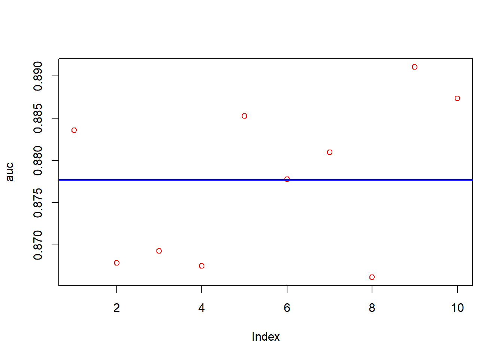

Download the Data
## Loaded gbm 2.1.8.1## Rows: 891 Columns: 12## ── Column specification ────────────────────────────────────────────────────────
## Delimiter: ","
## chr (5): Name, Sex, Ticket, Cabin, Embarked
## dbl (7): PassengerId, Survived, Pclass, Age, SibSp, Parch, Fare
##
## ℹ Use `spec()` to retrieve the full column specification for this data.
## ℹ Specify the column types or set `show_col_types = FALSE` to quiet this message.I will use the same data that i use in my other algorithms
## Rows: 891 Columns: 12
## ── Column specification ────────────────────────────────────────────────────────
## Delimiter: ","
## chr (5): Name, Sex, Ticket, Cabin, Embarked
## dbl (7): PassengerId, Survived, Pclass, Age, SibSp, Parch, Fare
##
## ℹ Use `spec()` to retrieve the full column specification for this data.
## ℹ Specify the column types or set `show_col_types = FALSE` to quiet this message.## Warning: There were 2 warnings in `mutate()`.
## The first warning was:
## ℹ In argument: `across(...)`.
## Caused by warning:
## ! The `...` argument of `across()` is deprecated as of dplyr 1.1.0.
## Supply arguments directly to `.fns` through an anonymous function instead.
##
## # Previously
## across(a:b, mean, na.rm = TRUE)
##
## # Now
## across(a:b, \(x) mean(x, na.rm = TRUE))
## ℹ Run `dplyr::last_dplyr_warnings()` to see the 1 remaining warning.## tibble [891 × 15] (S3: tbl_df/tbl/data.frame)
## $ y : num [1:891] 0 1 1 1 0 0 0 0 1 1 ...
## $ Pclass : Factor w/ 3 levels "1","2","3": 3 1 3 1 3 3 1 3 3 2 ...
## $ Sex : Factor w/ 2 levels "female","male": 2 1 1 1 2 2 2 2 1 1 ...
## $ Age : num [1:891, 1] -0.567 0.604 -0.274 0.384 0.384 ...
## ..- attr(*, "dimnames")=List of 2
## .. ..$ : chr [1:891] NA NA NA NA ...
## .. ..$ : NULL
## ..- attr(*, "scaled:center")= num 29.7
## ..- attr(*, "scaled:scale")= num 13.7
## $ SibSp : num [1:891, 1] 0.433 0.433 -0.474 0.433 -0.474 ...
## ..- attr(*, "scaled:center")= num 0.523
## ..- attr(*, "scaled:scale")= num 1.1
## $ Parch : num [1:891, 1] -0.473 -0.473 -0.473 -0.473 -0.473 ...
## ..- attr(*, "scaled:center")= num 0.382
## ..- attr(*, "scaled:scale")= num 0.806
## $ Fare : num [1:891, 1] -0.502 0.786 -0.489 0.42 -0.486 ...
## ..- attr(*, "scaled:center")= num 32.2
## ..- attr(*, "scaled:scale")= num 49.7
## $ Embarked : Factor w/ 3 levels "C","Q","S": 3 1 3 3 3 2 3 3 3 1 ...
## $ Ticket_Length : num [1:891, 1] 0.819 0.455 3.369 -0.273 -0.273 ...
## ..- attr(*, "scaled:center")= num 6.75
## ..- attr(*, "scaled:scale")= num 2.75
## $ Ticket_Is_Number: Factor w/ 2 levels "FALSE","TRUE": 1 1 1 2 2 2 2 2 2 2 ...
## $ Title : Factor w/ 5 levels "Master.","Miss.",..: 3 4 2 4 3 3 3 1 4 4 ...
## $ Name_Length : num [1:891, 1] -0.427 2.59 -0.535 1.836 -0.319 ...
## ..- attr(*, "scaled:center")= num 27
## ..- attr(*, "scaled:scale")= num 9.28
## $ Cabin_Letter : Factor w/ 7 levels "A","B","C","D",..: 7 3 7 3 7 7 5 7 7 7 ...
## $ Has_Cabin : Factor w/ 2 levels "FALSE","TRUE": 1 2 1 2 1 1 2 1 1 1 ...
## $ n : num [1:891, 1] 0.834 -1.204 -0.908 -1.204 0.834 ...
## ..- attr(*, "scaled:center")= num 357
## ..- attr(*, "scaled:scale")= num 192## [1] FALSEADABOOST in gbm
This creates our Grid
grid <- as.matrix(expand.grid(
shrinkage <- seq(0.005, 0.25, 0.01),
n.trees <- seq(100, 2000, 400),
interaction.depth <- c(2:6)
)
)
conf_lev <- .95
num_max <- 5 # Define number around the maximum
n <- log(1-conf_lev)/log(1-num_max/nrow(grid))
ind <- sample(nrow(grid), nrow(grid)*(n/nrow(grid)), replace = FALSE)
rgrid <- grid[ind, ]This code performs hyperparameter tuning for an Adaboost model in the GBM function/package. The number of iterations is controlled by the variable n. At each iteration, the code samples s hyperparameter combinations from a pre-defined grid. Then, the data is split into modeling and test data sets. the modeling data is boostrapped to make train and val data sets to to be used to select hyperparameters to be tested.
For each hyperparameter combination, the average area under the curve (AUC) is calculated across the v validation runs. The hyperparameter combination with the highest average AUC is selected as the best hyperparameters for that iteration. The selected hyperparameters and their corresponding AUC are stored in the opt matrix.
Finally, the code trains an Adaboostt model on the modeldata(both train and val) set using the best hyperparameters from each iteration. The AUC of that model is evaluated on a hold-out test set, and the results are stored in opt.
Note that the hyperparameters being tuned are shrinkage, n.trees, and interaction.depth. The nthread parameter controls the number of threads to use during training.
library(gbm)
library(ROCR)
n <- 10 # how many times we repeat the algorithm
v <- 50 # how many times we bootstrapped a sample for each hyperparameter set
opt <- matrix(0, nrow = n, ncol = 5, dimnames = list(NULL, c("shrinkage", " n.trees", "interaction.depth", "val_AUC", "Test_AUC")))
auc_t <- c()
for(j in 1:n){
# put aside data for final test. creat md and test
ind <- unique(sample(nrow(data), nrow(data), replace = TRUE))
md <- data[ind, ]
test <- data[-ind, ]
V_auc_mean <- c()
for (i in 1:nrow(rgrid)){
#cat("loops: ", j, i, "\r")
auc_tuning <- c()
for (p in 1:v){
# bootstrap samples for train and val
ind2 <- unique(sample(nrow(md), nrow(md), replace = TRUE))
train <- md[ind2, ]
val <- md[-ind2, ]
# create a model off of train data
model <- gbm(y ~ .,
distribution = "adaboost",
bag.fraction = 1,
shrinkage = rgrid[i, 1],
n.trees = rgrid[i, 2],
interaction.depth = rgrid[i, 3],
verbose = FALSE,
data = train
)
# Predicting on the val set
phat <- predict(model, n.trees = rgrid[i, 2], newdata = val, type = "response")
# Calculating the AUC
pred_rocr <- prediction(phat, val$y)
auc_ROCR <- performance(pred_rocr, measure = "auc")
auc_tuning[p] <- auc_ROCR@y.values[[1]]
}
V_auc_mean[i] <- mean(auc_tuning) # for each hyperparameter we are taking the mean of their runs
BI <- which.max(V_auc_mean) #best hyperparameter index
best_AUC <- V_auc_mean[BI]
best_params <- rgrid[BI, ]
best_params <- as.matrix(best_params)
best_params <- t(best_params)
# store the hyperparameters and there average AUC
opt[j, 1] <- best_params[1, 1]
opt[j, 2] <- best_params[1, 2]
opt[j, 3] <- best_params[1, 3]
opt[j, 4] <- max(V_auc_mean)
}
# model for the final test witht he model data
model <- gbm(y ~ .,
distribution = "adaboost",
bag.fraction = 1,
shrinkage = opt[j, 1],
n.trees = opt[j, 2],
interaction.depth = opt[j, 3],
n.cores = 3,
verbose = FALSE,
data = md
)
# Predicting on the test set
phat <- predict(model, newdata = test, n.trees = opt[j, 2], type = "response")
# Calculating the AUC
pred_rocr <- prediction(phat, test$y)
auc_ROCR <- performance(pred_rocr, measure = "auc")
auc_t <- auc_ROCR@y.values[[1]]
# store the test score
opt[j, 5] <- auc_t
}
head(opt)## shrinkage n.trees interaction.depth val_AUC Test_AUC
## [1,] 0.005 1700 3 0.8679052 0.8835600
## [2,] 0.005 500 6 0.8766404 0.8678797
## [3,] 0.015 100 4 0.8718655 0.8693021
## [4,] 0.115 100 2 0.8880427 0.8675688
## [5,] 0.055 100 4 0.8793722 0.8852370
## [6,] 0.015 500 2 0.8716850 0.8777851auc <- opt[, 5]
# plot auc and 95% CI
plot(auc, col="red")
abline(a = mean(auc), b = 0, col = "blue", lwd = 2)
abline(a = mean(auc)-1.96*sd(auc), b = 0, col = "green", lwd = 3)
abline(a = mean(auc)+1.96*sd(auc), b = 0, col = "green", lwd = 3)